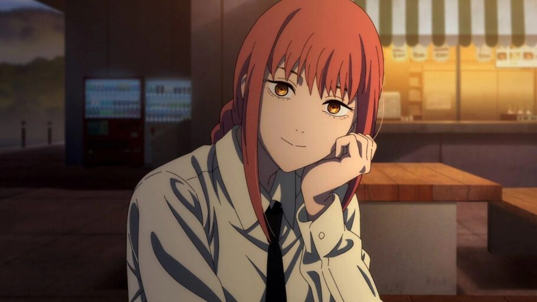

Quem é Makima?
Makima é uma das pessoas mais fortes do mundo de Chainsaw Man, graças às suas habilidades físicas e sobrenaturais como um demônio, junto com sua personalidade astuta e manipuladora. Ela é temida por humanos, demônios e demônios em todo o mundo, o que aumenta seus poderes como demônio. Segundo o presidente dos Estados Unidos, outros países além da América já desistiram de tentar combatê-la.
Como saber mais dela?
- Fandom - Algumas curiosidades
- My Anime List - Outras curiosidades
- Crunchyroll - Assistir Chainsaw Man